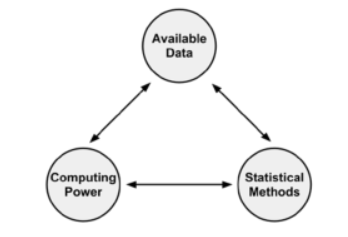
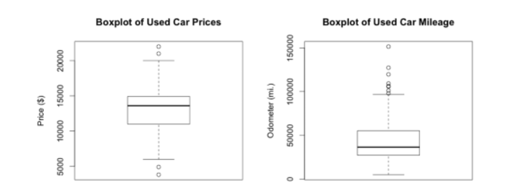
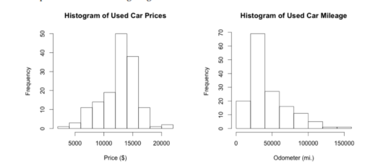
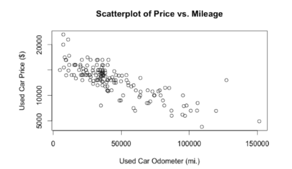
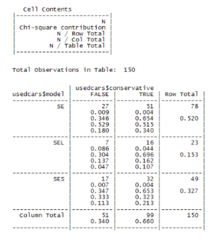

Resumen Machine Learning
Machine Learning
Unidad 1
Orígenes del Machine Learning
Este campo se originó en un entorno donde los datos disponibles, los métodos estadísticos y el poder de cómputo evolucionaron rápida y simultáneamente
El crecimiento de los datos requería potencia informática adicional, lo que a su vez estimuló el desarrollo de estadísticas métodos para analizar grandes conjuntos de datos. Esto creó un ciclo de avance que permitió recopilar datos aún más grandes e interesantes.

Usos y abusos de Machine Learning
En esencia, el Machine Learning está principalmente interesado en dar sentido a los datos complejos:
• Predecir los resultados de las elecciones
• Identifique y filtre los mensajes de spam del correo electrónico
• Prever actividad delictiva
• Automatice las señales de tráfico de acuerdo con las condiciones de la carretera
• Producir estimaciones financieras de tormentas y desastres naturales
• Examinar la rotación de clientes
• Crea aviones de pilotaje automático y coches de conducción automática.
• Identificar personas con capacidad para donar
• Dirigir la publicidad a tipos específicos de consumidores
Un algoritmo de aprendizaje automático toma datos e identifica patrones que pueden ser utilizado para la acción
Consideraciones Éticas
Se debe tener precaución al obtener o analizar datos para evitar infringir leyes, violar términos de servicio o acuerdos de uso de datos, abusar de la confianza o violar la privacidad de los clientes o del público.
Ciertas jurisdicciones pueden impedirle usar datos raciales, étnicos, religiosos u otras clases protegidas por motivos comerciales, pero tenga en cuenta que excluir estos datos de su análisis puede no ser suficiente: los algoritmos de aprendizaje automático pueden aprender esta información de forma independiente sin darse cuenta.
Aparte de las consecuencias legales, el uso inapropiado de los datos puede perjudicar sus resultados. Los clientes pueden sentirse incómodos o asustados si se hacen públicos aspectos de sus vidas que consideran privados.
Sería prudente considerar las implicaciones culturales de su trabajo antes de comenzar con su proyecto
¿Cómo aprende Machine Learning?
Independientemente de si el alumno es un humano o una máquina, el proceso básico de aprendizaje es similar. Se puede dividir en tres componentes de la siguiente manera:
• Entrada de datos: utiliza la observación, el almacenamiento de memoria y la recuperación para proporcionar una
base fáctica para un mayor razonamiento.
• Abstracción: Implica la traducción de datos en representaciones más amplias.
• Generalización: utiliza datos abstractos para formar una base para la acción.
Las estrategias de aprendizaje comúnmente utilizadas para crear un esquema o un mapa conceptual son similares a cómo una máquina realiza la abstracción del conocimiento.
Abstracción y representación del conocimiento
Durante el proceso de representación del conocimiento, la computadora resume las entradas sin procesar en un modelo, una descripción explícita de los patrones estructurados entre los datos.
Hay muchos tipos diferentes de modelos. Es posible que ya estés familiarizado con algunos.
Ejemplos incluyen:
• Ecuaciones
• Diagramas como árboles y gráficos
• Reglas lógicas if/else
• Agrupaciones de datos conocidas como clústeres
La elección del modelo normalmente no se deja en manos de la máquina. En cambio, el modelo está dictado por la tarea de aprendizaje y el tipo de datos que se analizan
El proceso de ajustar un modelo particular a un conjunto de datos se conoce como entrenamiento
El entrenamiento connota mejor el hecho de que el maestro humano impone el modelo de aprendizaje automático al estudiante máquina, proporcionando a la computadora una estructura que intenta modelar.
Cuando el modelo ha sido entrenado, los datos se han transformado en una forma abstracta que resume la información original. Es importante tener en cuenta que el modelo en sí mismo no proporciona datos adicionales, aunque a veces es interesante por sí solo.
¿Cómo puede ser esto? La razón es que al imponer una estructura asumida sobre los datos subyacentes, da una idea de lo que no se ve y proporciona una teoría sobre cómo los datos están relacionados.
Generalización
El término generalización describe el proceso de convertir el conocimiento abstracto en una forma que pueda utilizarse para la acción.
Los algoritmos de aprendizaje automático generalmente emplean atajos que dividen más rápidamente el conjunto de conceptos. Con este fin, el algoritmo empleará heurísticas o conjeturas fundamentadas sobre dónde encontrar los conceptos más importantes.
Evaluar el exito del aprendisaje
El paso final en el proceso de generalización es determinar el éxito del modelo.
Una vez que un modelo ha sido entrenado en un conjunto de datos inicial, el modelo se prueba en un nuevo conjunto de datos y se juzga en qué medida su caracterización de los datos de entrenamiento se generaliza a los nuevos datos. Vale la pena señalar que es extremadamente raro que un modelo generalice perfectamente todos los casos imprevistos.
Los datos ruidosos son causados por eventos aparentemente aleatorios, como:
• Error de medición debido a sensores imprecisos que a veces suman o restan
un poco de la lectura
• Problemas con el informe de datos, como que los encuestados informen respuestas aleatorias a
preguntas de la encuesta para terminar más rápido
• Errores causados cuando los datos se registran incorrectamente, incluidos valores faltantes, nulos, truncados, codificados incorrectamente o dañado
Tratar de modelar el ruido en los datos es la base de un problema llamado sobreajuste.
e dice que un modelo que parece funcionar bien durante el entrenamiento pero lo hace mal durante las pruebas está sobreajustado al conjunto de datos de entrenamiento, ya que no se generaliza bien.
Las soluciones al problema del sobreajuste son específicas para enfoques particulares de aprendizaje automático.
Pasos para aplicar el aprendisaje
1. Recopilación de datos: ya sea que los datos estén escritos en papel, registrados en archivos de texto y hojas de cálculo, o almacenados en una base de datos SQL, deberá recopilarlos en un formato electrónico adecuado para el análisis. Estos datos servirán como material de aprendizaje que utiliza un algoritmo para generar conocimiento procesable.
2. Explorar y preparar los datos: la calidad de cualquier proyecto de aprendizaje automático se basa en gran medida en la calidad de los datos que utiliza. Este paso en el proceso de aprendizaje automático tiende a requerir una gran cantidad de intervención humana. Una estadística citada a menudo sugiere que el 80 por ciento del esfuerzo en el aprendizaje automático se dedica a los datos. Gran parte de este tiempo se dedica a aprender más sobre los datos y sus matices durante una práctica llamada exploración de datos.
3. Entrenar un modelo con los datos: para cuando los datos se hayan preparado para el análisis, es probable que tenga una idea de lo que espera aprender de los datos. La tarea específica de aprendizaje automático informará la selección de un algoritmo apropiado, y el algoritmo representará los datos en forma de modelo.
4. Evaluación del rendimiento del modelo: debido a que cada modelo de aprendizaje automático da como resultado una solución sesgada del problema de aprendizaje, es importante evaluar qué tan bien aprendió el algoritmo a partir de su experiencia. Según el tipo de modelo utilizado, es posible que pueda evaluar la precisión del modelo mediante un conjunto de datos de prueba o que necesite desarrollar medidas de rendimiento específicas para la aplicación prevista.
5. Mejora del rendimiento del modelo: si se necesita un mejor rendimiento, se hace necesario utilizar estrategias más avanzadas para aumentar el rendimiento del modelo. A veces, puede ser necesario cambiar a un tipo de modelo completamente diferente. Es posible que deba complementar sus datos con datos adicionales o realizar un trabajo preparatorio adicional como en el paso dos de este proceso.
Elegir un Algoritmo para Machine Learning
El proceso de elegir un algoritmo implica hacer coincidir las características de los datos que se van a aprender con los sesgos de los enfoques disponibles
Dado que la elección de un algoritmo de aprendizaje automático depende en gran medida del tipo de datos que está analizando y de la tarea propuesta, a menudo es útil pensar en este proceso mientras recopila, explora y limpia sus datos.
Pensando en los datos de entrada
Todos los algoritmos de aprendizaje automático requieren datos de entrenamiento de entrada. El formato exacto puede diferir, pero en su forma más básica, los datos de entrada toman la forma de ejemplos y características.
Las características vienen en varias formas también. Si una característica representa una característica medida en números, como era de esperar, se llama numérica. Alternativamente, si mide un atributo que está representado por un conjunto de categorías, la característica se denomina categórica o nominal. Un caso especial de variables categóricas se llama ordinal, que designa una variable nominal con categorías que caen en una lista ordenada.
Pensando en los tipos de aprendizaje automático algoritmos
Los algoritmos de aprendizaje automático se pueden dividir en dos grupos principales: estudiantes supervisados que se usan para construir modelos predictivos y estudiantes no supervisados que se usan para construir modelos descriptivos.
El algoritmo de aprendizaje intenta descubrir y modelar la relación entre la característica objetivo (la característica que se predice) y las otras características.
Debido a que los modelos predictivos reciben instrucciones claras sobre lo que necesitan aprender y cómo deben aprenderlo, el proceso de entrenamiento de un modelo predictivo se conoce como aprendizaje supervisado. La supervisión no se refiere a la participación humana, sino al hecho de que los valores objetivo brindan un rol de supervisión, lo que indica la tarea que necesita aprender.
La característica objetivo que se va a predecir es una característica categórica conocida como clase y se divide en categorías denominadas niveles. Una clase puede tener dos o más niveles, y los niveles no tienen por qué ser necesariamente ordinales. Debido a que la clasificación se usa tanto en el aprendizaje automático, existen muchos tipos de algoritmos de clasificación.
Los alumnos supervisados también se pueden usar para predecir datos numéricos como ingresos, valores de laboratorio, puntajes de pruebas o conteos de artículos. Para predecir tales valores numéricos, una forma común de predicción numérica ajusta los modelos de regresión lineal a los datos de entrada.
Aunque los modelos de regresión no son el único tipo de modelo numérico, son, con diferencia, los más utilizados.
Se utiliza un modelo descriptivo para tareas que se beneficiarían de la información obtenida al resumir datos de formas nuevas e interesantes. A diferencia de los modelos predictivos que predicen un objetivo de interés; en un modelo descriptivo, ninguna característica es más importante que otra.
La tarea de modelado descriptivo de dividir un conjunto de datos en grupos homogéneos se denomina agrupación. Esto a veces se usa para el análisis de segmentación que identifica grupos de personas con información similar de compras, donaciones o demográfica para que las campañas publicitarias se puedan adaptar a audiencias particulares.
Hacer coincidir sus datos con un algoritmo apropiado
La siguiente tabla enumera los tipos generales de algoritmos de aprendizaje automático que se tratan en este libro, cada uno de los cuales puede implementarse de varias maneras. Aunque esto cubre solo una parte del conjunto completo de todos los algoritmos de aprendizaje automático, el aprendizaje de estos métodos proporcionará una base suficiente para dar sentido a otros métodos a medida que los encuentre.

Para hacer coincidir una tarea de aprendizaje con un enfoque de aprendizaje automático, deberá comenzar con uno de los cuatro tipos de tareas: clasificación, predicción numérica, detección de patrones o agrupación.
Usar R para Machine Learning
A pesar del amplio conjunto de complementos de R disponibles, el formato del paquete hace que la instalación y el uso sean un proceso prácticamente sin esfuerzo. Para demostrar el uso de paquetes, instalaremos y cargaremos el paquete RWeka, que fue desarrollado por Kurt Hornik, Christian Buchta y Achim Zeileis (consulte Aprendizaje automático de código abierto: R conoce a Weka
en Computational Statistics 24: 225-232 para obtener más información). El paquete RWeka proporciona una colección de funciones que dan acceso a R a los algoritmos de aprendizaje automático en el paquete de software Weka basado en Java de Ian H. Witten y Eibe Frank.
Para obtener más información sobre Weka, consulte:
http://www.cs.waikato.ac.nz/~ml/weka/.
Instalar y carga de paquetes R
A pesar del amplio conjunto de complementos de R disponibles, el formato del paquete hace que la instalación y el uso sean un proceso prácticamente sin esfuerzo. Para demostrar el uso de paquetes, instalaremos y cargaremos el paquete RWeka, que fue desarrollado por Kurt Hornik, Christian Buchta y Achim Zeileis (consulte Aprendizaje automático de código abierto: R conoce a Weka en Computational Statistics 24: 225-232 para obtener más información). El paquete RWeka proporciona una colección de funciones que dan acceso a R a los algoritmos de aprendizaje automático en el paquete de software Weka basado en Java de Ian H. Witten y Eibe Frank.
Para obtener más información sobre Weka, consulte:
http://www.cs.waikato.ac.nz/~ml/weka/.
Instalación de un paquete R
La forma más directa de instalar un paquete es a través de la función install.packages().
Para instalar el paquete RWeka, en el símbolo del sistema R simplemente escriba:
> install.packages(“RWeka”)
R luego se conectará a CRAN y descargará el paquete en el formato correcto para tu sistema operativo Algunos paquetes como RWeka requieren paquetes adicionales para instalarse antes de que se puedan utilizar (se denominan dependencias). Por defecto, el instalador descargará e instalará automáticamente cualquier dependencia.
Las opciones de instalación predeterminadas son apropiadas para la mayoría de los sistemas. Sin embargo, en algunos casos, es posible que desee instalar un paquete en otra ubicación. Por ejemplo, si no tiene privilegios de raíz o administrador en su sistema, es posible que deba especificar una ruta de instalación alternativa. Esto se puede lograr usando la opción lib, de la siguiente manera:
> install.packages(“RWeka”, lib=“/path/to/library”)
La función de instalación también proporciona opciones adicionales para instalar desde un archivo local, instalar desde la fuente o usar versiones experimentales. Puede leer acerca de estas opciones en el archivo de ayuda usando el siguiente comando:
> ?install.packages
Instalación de un paquete mediante la interfaz de apuntar y hacer clic
Como alternativa a escribir el comando install.packages(), R proporciona una interfaz gráfica de usuario (GUI) para la instalación de paquetes. En un sistema Microsoft Windows, se puede acceder a esto desde el elemento de comando Instalar paquete(s) en el menú Paquetes, como se muestra en la siguiente captura de pantalla. En Mac OS X, el comando tiene la etiqueta Instalador de paquetes y se encuentra en el menú Paquetes y datos.
En Windows, después de iniciar el instalador del paquete (y elegir una ubicación espejo CRAN si aún no lo ha hecho), aparecerá una gran lista de paquetes. Simplemente desplácese hasta el paquete RWeka y haga clic en el botón Aceptar para instalar el paquete y todas las dependencias en la ubicación predeterminada.
En Mac OS X, el menú del instalador del paquete ofrece opciones adicionales. Para cargar la lista de paquetes, haga clic en el botón Obtener lista. Desplácese hasta el paquete RWeka (o utilice la función de búsqueda de paquetes) y haga clic en Instalar seleccionado. Tenga en cuenta que, de forma predeterminada, el instalador de paquetes de Mac OS X no instala dependencias a menos que se seleccione la casilla de verificación Instalar dependencias.
Cargando un paquete R
Para conservar la memoria, R no carga todos los paquetes instalados de forma predeterminada. En su lugar, los usuarios cargan los paquetes a medida que los necesitan mediante library() function.
Para cargar el paquete RWeka que instalamos anteriormente, debe escribir lo siguiente:
> library(RWeka)
Aparte de RWeka, hay varios otros paquetes de R que se utilizarán en capítulos posteriores. Se proporcionarán instrucciones de instalación a medida que se utilicen paquetes adicionales.
Unidad 2
Gestión y comprensión de datos
Explorando la estructura de los datos
La función str() proporciona un método para mostrar la estructura de un marco de datos o cualquier estructura de datos R, incluidos vectores y listas. Se puede utilizar para crear el esquema básico de nuestro diccionario de datos:
> str(usedcars)
‘data.frame’: 150 obs. of 6 variables:
$ year : int 2011 2011 2011 2011 …
$ model : chr “SEL” “SEL” “SEL” “SEL” …
$ price : int 21992 20995 19995 17809 …
$ mileage : int 7413 10926 7351 11613 …
$ color : chr “Yellow” “Gray” “Silver” “Gray” …
$ transmission: chr “AUTO” “AUTO” “AUTO” “AUTO” …
The 6 variables statement refers to the six features that were recorded in the data.
These features are listed by name on separate lines. Looking at the line for the feature called color, we note some additional details:
$ color : chr “Yellow” “Gray” “Silver” “Gray” …
Explorando variables numéricas
Para investigar las variables numéricas en los datos de automóviles usados, emplearemos un conjunto de medidas de uso común para describir valores conocidos como estadísticas de resumen. La función summary() muestra varias estadísticas de resumen comunes.
Echemos un vistazo a una sola característica, año:
> summary(usedcars$year)
Min. 1st Qu. Median Mean 3rd Qu. Max.
2000 2008 2009 2009 2010 2012
También podemos usar la función summary() para obtener estadísticas de resumen para varias variables numéricas al mismo tiempo:
> summary(usedcars[c(“price”, “mileage”)])
price mileage
Min. : 3800 Min. : 4867
1st Qu.:10995 1st Qu.: 27200
Median :13592 Median : 36385
Mean :12962 Mean : 44261
3rd Qu.:14904 3rd Qu.: 55125
Max. :21992 Max. :151479
Medición de la tendencia central: media y mediana
En estadística, el promedio también se conoce como la media, una medida definida como la suma de todos los valores dividida por el número de valores. Por ejemplo, para calcular el ingreso medio en un grupo de tres personas con ingresos de $35 000, $45 000 y $55 000, podríamos escribir:
> (36000 + 44000 + 56000) / 3
[1] 45333.33
R también proporciona una función mean(), que calcula la media de un vector de números:
> mean(c(36000, 44000, 56000))
[1] 45333.33
Although the mean is by far the most commonly cited statistic for measuring the center of a dataset, it is not always the most appropriate. Another commonly-used measure of central tendency is the median, which is the value that occurs halfway through an ordered list of values. As with the mean, R provides a median() function, which we can apply to our salary data as shown in the following example:
> median(c(36000, 44000, 56000))
[1] 44000
El summary de cinco números es un conjunto de cinco estadísticas que representan aproximadamente la dispersión de un conjunto de datos. Las cinco estadísticas se incluyen en la salida de la función summary(). Escritos en orden, son:
1. Mínimo (Min.)
2. Primer cuartil, o Q1 (1st Qu.)
3. Mediana, o Q2 (Median)
4. Tercer cuartil, o Q3 (3rd Qu.)
5. Máximo (Max.)
El lapso entre el valor mínimo y máximo se conoce como rango. En R, la función range() devuelve tanto el valor mínimo como el máximo. Al combinar range() con la función de diferencia, diff() te permite examinar el rango de datos con un solo comando:
> range(usedcard$price)
[1] 3800 21992
> diff(range(usedcard$price))
[1] 18192
El 50 por ciento medio de los datos entre Q1 y Q3 es de particular interés porque en sí mismo es una medida simple de dispersión. La diferencia entre Q1 y Q3 se conoce como rango intercuartil (IQR) y se puede calcular con la función IQR():
> IQR(usedcard$price)
[1] 3909.5
La función quantile() proporciona una herramienta robusta para identificar cuantiles para un conjunto de valores. De forma predeterminada, la función quantile() devuelve el resumen de cinco números.
La aplicación de la función a los datos de automóviles usados da como resultado las mismas estadísticas que antes:
> quantile(usedcars$price)
0% 25% 50% 75% 100%
3800.0 10995.0 13591.5 14904.5 21992.0
Visualización de variables numéricas: diagramas de caja
Para obtener un diagrama de caja para una variable, usaremos la función boxplot(). También especificaremos un par de parámetros adicionales, main e ylab, para agregar un título a la figura y etiquetar el eje y (el eje vertical), respectivamente. Los comandos para crear precio y kilometraje diagramas de caja son:
> boxplot(usedcars$price, main=“Boxplot of Used Car Prices”, ylab=“Price ($)”)
> boxplot(usedcars$mileage, main=“Boxplot of Used Car Mileage”, ylab=“Odometer (mi.)”)

Visualización de variables numéricas – histogramas
Podemos crear un histograma para el precio de un auto usado y los datos de kilometraje usando la función hist(). Como habíamos hecho con el diagrama de caja, especificaremos un título para la figura usando el parámetro principal y etiquetaremos el eje x con el parámetro xlab. Los comandos para crear los histogramas son:
> hist(usedcars$price, main = “Histogram of Used Car Prices”, xlab = “Price ($)”)
> hist(usedcars$mileage, main = “Histogram of Used Car Mileage”, xlab = “Odometer (mi.)”)

Medición de la dispersión: varianza y desviación estándar
Para obtener la varianza y la desviación estándar en R se pueden utilizar las funciones var() y sd(). Por ejemplo, al calcular la varianza y la desviación estándar de nuestras variables de precio y millaje, encontramos:
> var(usedcars$price)
[1] 9749892
> sd(usedcars$price)
[1] 3122.482
> var(usedcars$mileage)
[1] 728033954
> sd(usedcars$mileage)
[1] 26982.1
Explorando variables categóricas
A diferencia de los datos numéricos, los datos categóricos se examinan mediante tablas en lugar de estadísticas de resumen. Una tabla que presenta una única variable categórica se conoce como tabla unidireccional. La función table() se puede usar para generar tablas unidireccionales para nuestros datos de autos usados:
> table(usedcars$year)
2000 2001 2002 2003 2004 2005 2006 2007 2008 2009 2010 2011 2012
3 1 1 1 3 2 6 11 14 42 49 16 1
> table(usedcars$model)
SE SEL SES
78 23 49
> table(usedcars$color)
Black Blue Gold Gray Green Red Silver White Yellow
35 17 1 16 5 25 32 16 3
R también puede realizar el cálculo de las proporciones de la tabla directamente usando el comando prop.table() en una tabla producida por la función table():
> model_table <- table(usedcars$model)
> prop.table(model_table)
SE SEL SES
0.5200000 0.1533333 0.3266667
Los resultados de prop.table() se pueden combinar con otras funciones de R para transformar la salida. Supongamos que nos gustaría mostrar los resultados en porcentajes con un solo decimal. Podemos hacer esto multiplicando las proporciones por 100, luego usando la función round() mientras especificamos dígitos = 1, como se muestra en el siguiente ejemplo:
> color_table <- table(usedcars$color)
> color_pct <- prop.table(color_table) * 100
> round(color_pct, digits = 1)
Black Blue Gold Gray Green Red Silver White Yellow
23.3 11.3 0.7 10.7 3.3 16.7 21.3 10.7 2.0
Visualización de relaciones: diagramas de dispersión
El comando completo para crear un diagrama de dispersión es:
> plot(x = usedcars$mileage, y = usedcars$price,
main = “Scatterplot of Price vs. Mileage”,
xlab = “Used Car Odometer (mi.)”,
ylab = “Used Car Price ($)”)

Examen de las relaciones: tabulaciones cruzadas de dos factores
Hay varias funciones para producir tablas de doble entrada en R, incluida table(), que también usamos para tablas de una sola entrada. La función CrossTable() en el paquete gmodels creado por Gregory R. Warnes es quizás la más fácil de usar porque presenta los porcentajes de fila, columna y margen en una sola tabla, ahorrándonos la molestia de combinar estos datos nosotros mismos. Para instalar el paquete gmodels, escriba:
> install.packages(“gmodels”)
Después de que se instale el paquete, simplemente escriba biblioteca (gmodels) para cargar el paquete. Deberá cargar el paquete durante cada sesión de R en la que planee usar la función CrossTable().
Antes de continuar con nuestro análisis, simplifiquemos nuestro proyecto reduciendo el número de niveles en la variable de color. Esta variable tiene nueve niveles, pero en realidad no necesitamos tantos detalles. Lo que realmente nos interesa es si el color del coche es conservador o no. Con este fin, dividiremos los nueve colores en dos grupos: el primer grupo incluirá los colores conservadores Negro, Gris, Plateado y Blanco; el segundo grupo incluirá Azul, Oro, Verde, Rojo y Amarillo. Crearemos una variable indicadora binaria (a menudo llamada variable ficticia), indicando si el color del automóvil es o no
conservador según nuestra definición. Su valor será 1 si es verdadero, 0 en caso contrario:
> usedcars$conservative <- usedcars$color %in% c(“Black”, “Gray”, “Silver”, “White”)
Al examinar la salida de table() para nuestra variable recién creada, vemos que alrededor de dos tercios de los automóviles tienen colores conservadores, mientras que un tercio no los tiene:
> table(usedcars$conservative)
FALSE TRUE
51 99
Ahora, veamos una tabulación cruzada para ver cómo la proporción de autos de colores conservadores varía según el modelo. Dado que asumimos que el modelo de automóvil dicta la elección del color, trataremos a la conservadora como la variable dependiente (y). Por lo tanto, el comando CrossTable() es:
